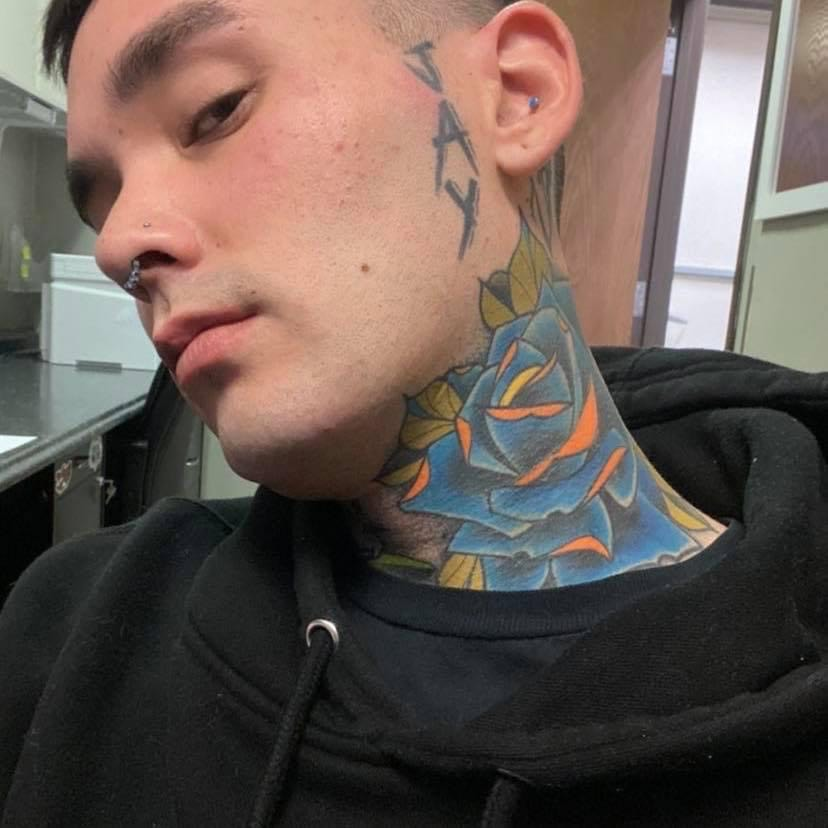

About

Clayton Harris
Owner
Zoos Body Piercing
zoosbodypiercing@gmail.com
Tel: (405) 698-6581
Clayton Harris has been a licensed professional body piercer since 2012, offering custom
and unique body piercings in Oklahoma.
Clayton’s journey started with an
apprenticeship under “Big Daddy Moe” at Big Daddy Tattoos in Oklahoma City, Oklahoma.
Hard work and dedication have led to his success as a licensed professional body
piercer.
Health and Safety of the client are a priority for Clayton. He attends
the yearly AAP piercing conference in Las Vegas in order to continue his education and
grow in the industry. He feels continuing education is necessary to stay current with
trends in the industry and to maximize profits.
Clayton’s favorite body piercings
are the varied parts of the ear: Conch, Forward Helix, and the Daith Piercing. With
these piercings, he can make custom anodized pieces with different color combinations to
give uniqueness and beauty to each piercing. He likes to ensure that the clients have
something unique and beautiful that compliments each person’s anatomy.
Clayton
continually studies the pioneers and great piercers in the industry who have made
piercing what it is today. His favorites are Jim Ward and Elayne Angel who ran the
world-famous Gauntlet along with world famous Jef Saunders who writes blogs for
professionals and provides consumer information. Another favorite Luis Garcia
specializes in surface piercings and provides the industry with some of the great
technologies used today.
Clayton is looking forward to his next venture, owning
his own piercing studio. With his many years of experience and large clientele, that
will follow him to his new business, he is confident in his future success.
Why Choose Us?
-
Friendly and informative staff
When you come into one of our shops, our friendly and informative staff is ready to help you with anything you need from piercings to high quality body jewelry.
-
Safety procedures & standard
Our safety procedures are industry standard and our autoclave’s are always up to date on spore tests and always maintained as required. We sterilize every piece of equipment and jewelry that will come in contact with you when you get pierced or have new jewelry put in.
-
Premium body jewelry
We’re very proud to offer premium body jewelry from the industry’s top vendors. Call or visit Zoos Body Piercing for a free, friendly consultation. Please call us at 405-737-7767 with questions.
clients say
I got my septum pierced and I’m so happy I heard of this place. I was so nervous that I would not stop talking. None the less his apprentice and him answered every single one my questions. From beginning to end he explained everything. He even showed me the size differences. The piercing itself didn’t hurt. It’s two days later and it doesn’t hurt or anything. Feels almost normal. The shop is super clean and definitely a vibe. I recommend to everyone and will get the word out for sure.
Edit to add: he just messaged me to make sure everything is going well. That’s like world class customer service right there. Thanks bud!Alexis Van Der Bogart
Walked in the other night for a septum piercing and it went great! Clayton and his apprentice were amazing, made me feel comfortable, gave me all my after care needs and instructions. My experience was fab, thank y’all so much.Khadijah Nasreldin
- Reservation
- 405-698-6581